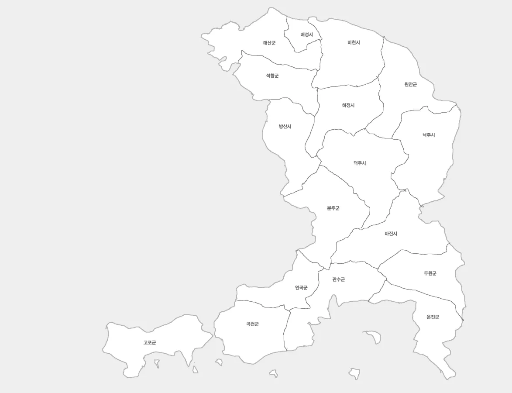

1. 개요

대한민국의 도(행정구역). 1896년(건양 1년) 13도제 실시 당시 덕빈도가 남북으로 분리되면서 덕빈북도와 함께 설치되었다.
도청 소재지는 덕빈권 행정의 중심이자 도내 최대 도시인 덕주시이다. 도청사는 원도심인 덕주시 덕산구 월로1가 27에 위치해 있다. 보통 광역자치단체의 청사가 노후화되면 신도시(조전구)로 이전하는 것이 추세지만, 덕빈남도는 도심 공동화 방지와 역사적 상징성을 지키기 위해 이전하지 않고 그 자리를 지켰다. 대신 구도심인 덕산구 주변을 재개발하고, 신도심인 조전구와는 도로 및 도시철도망을 확충하여 "역사의 덕산, 확장의 조전"이라는 투 트랙 발전 전략을 성공적으로 안착시켰다. 덕분에 덕산구청 주변 맛집들은 여전히 도청 공무원들로 문전성시를 이룬다.
지리적으로는 매우 독특한 형상을 하고 있다. 북쪽으로는 서해, 남쪽으로는 남해와 접하고 있어 위아래가 모두 바다인 특이한 반도 혹은 곶(Cape) 지형을 띤다. 서쪽으로는 형제 지역인 덕빈북도와 접하며(흡사 충청남도와 충청북도의 관계와 비슷하다), 동쪽으로는 전라남도와 경계를 맞대고 있다. 덕빈권의 맏형 격인 효빈광역시와는 직접적으로 경계를 맞대고 있지 않지만, 덕빈북도를 거쳐 문화적, 경제적 교류를 이어가고 있다.
인구는 2,015,432명 (2025년 기준)이다. 형제인 덕빈북도(약 351만 명)보다는 적지만, 비수도권 도(道) 중에서는 인구 200만 명 선을 굳건히 방어하고 있는 건실한 광역자치단체다. 일반적으로 지방이 겪는 '소멸 위기'에서 비교적 자유로운 편인데, 이는 덕빈남도가 가진 '삼각 균형 발전' 구조 덕분이다.
- 행정·교육 중심: 덕주시 (52만) - 원도심(덕산)과 신도심(조전)의 조화.
- 교통·물류 중심: 낙주시 (31만) - 전라남도와 연결되는 동부 관문.
- 산업·무역 중심: 방산시 (21만) - 덕빈북도와 연결되는 서부 산업 벨트.
이 3대 거점 도시가 도내 경제를 삼발이처럼 든든하게 받치고 있고, 운진군, 매산군 등 기초 체력이 튼튼한 군(郡) 지역들이 뒤를 받쳐주고 있다. 덕분에 특정 도시 하나가 망한다고 도 전체가 휘청이지 않는 안정적인 구조를 자랑한다.
경제적으로는 북쪽의 서해와 남쪽의 남해를 모두 끼고 있는 이점 덕분에 해양 산업의 메카로 통한다. 북쪽 해안(비천-매성)은 항만 물류와 수산업이, 남쪽 해안(운진-고포)은 청정 해양 관광과 휴양 산업이 발달했다.
정치적으로는 더불어민주당의 강세 지역이다. 다만, 덕빈북도보다는 상대적으로 실리적인 투표 성향을 보인다. 전통적으로는 민주당 텃밭이지만, 지역 개발 이슈나 인물론에 따라 보수 정당 후보가 당선되는 이변이 종종 일어난다. 특히 전라남도와 접해 있는 동부권(원안군)이나 농촌 지역에서는 보수세가 제법 관측되기도 한다. 현재 도지사인 김영산은 더불어민주당 소속이다.
2. 상징
2.1. 휘장 (CI)

덕빈남도의 심볼마크는 '두 개의 바다(Two Oceans)'와 '비상하는 날개'를 형상화했다.
- 상단 (청록색 곡선): 북쪽의 서해와 역동적인 파도를 상징한다. 진취적인 기상과 항만 물류의 중심지임을 의미한다.
- 하단 (남색 곡선): 남쪽의 남해와 깊고 푸른 바다를 상징한다. 해양 관광과 청정 자연을 의미한다.
- 중앙 (여백): 두 파도가 만나 이루는 S자 곡선은 덕빈남도의 영문 이니셜 'S'(South)를 떠올리게 하며, 화합과 소통을 뜻한다.
근데 아무리 봐도 태극무늬를 반으로 쪼개놓은 것 같다. - 색상: 덕빈남도의 대표 색상인 '덕빈 오션 블루(#0077DD)'와 '덕빈 에코 그린(#00CCAA)'을 그라데이션으로 적용했다. (참고로 이 색깔은 덕주 1호선 빼고 다 들어갔다.)
2.2. 슬로건
- 의미: "바다를 품은 덕빈", "대양으로 뻗어나가는 덕빈"이라는 뜻이다.
- 여담: 어감이 워낙 입에 착 감기는 탓에, 타 지역 사람들은 워터파크 이름인 줄 아는 경우가 많다. (...) 실제로 여름 휴가철이 되면 "야, 이번에 오션덕빈 갈래?"라는 말이 심심찮게 들린다. 덕빈남도청 홍보팀도 이걸 노린 건지, 여름만 되면 로고 옆에 튜브 낀 마스코트를 배치한다.
2.3. 마스코트
- 이름: 덕남이 (Deoknami)
- 종족: 남해의 요정 (...)
- 설정: 덕빈남도 앞바다(남해)에서 태어난 물의 요정이다. 머리 위에는 덕빈남도의 도화(道花)인 매화 꽃장식이 달려 있고, 몸통은 물방울 모양이다. 항상 해맑게 웃고 있지만, 환경 오염을 시키는 사람을 보면 해일을 일으켜 혼내준다는 무시무시한 설정이 있다.
- 반응: 디자인이 꽤 귀여워서 인기가 많다. 특히 굿즈(인형, 키링)가 불티나게 팔리는데, 옆 동네 덕빈북도의 마스코트 '두로(백로)'와 커플링으로 엮이기도 한다. 덕남이가 두로를 타고 날아다니는 팬아트가 종종 보인다.
- 2024년, 덕남이 이모티콘 무료 배포 이벤트가 열렸는데 서버가 터지는 바람에 담당 주무관이 시말서를 썼다는 전설이 있다.
2.4. 상징물
- 도화 (道花): 매화
이른 봄, 추위를 이겨내고 가장 먼저 피어나는 꽃. 도민의 강인한 정신력과 선비 정신을 상징한다. 매산군과 곡천군 일대에 대규모 매화 군락지가 있어 매년 봄 '덕빈 매화 축제'가 열린다. - 도목 (道木): 은행나무
병충해에 강하고 수명이 긴 나무. 덕빈남도의 무궁한 발전과 번영을 상징한다. 덕주시 덕산구 원도심 가로수가 전부 은행나무라 가을만 되면 노란 물결이 장관을 이룬다.그리고 은행 똥냄새도 장관이다. - 도조 (道鳥): 갈매기
3면 중 2면이 바다인 덕빈남도의 정체성을 가장 잘 나타내는 새. 굳센 날개짓과 강한 생활력을 상징한다. 비천시 항구에 가면 이 녀석들이 사람 손에 있는 새우깡을 낚아채는 묘기를 볼 수 있다. - 도가 (道歌): 덕빈남도민의 노래
가사 중에 "남쪽 바다 푸른 물결~"로 시작하는 구간이 있는데, 멜로디가 묘하게 트로트 뽕짝 느낌이 나서 어르신들이 좋아한다. 관공서 행사 때마다 틀어준다.
3. 외국어 표기
- 영어: Deokbinnam-do
- 한자: 德彬南道
- 일본어: トクビンナムド (Tokubin'nam-do)
- 중국어: 德彬南道 (Débīnnán Dào)
4. 역사
덕빈남도의 역사는 "화려한 해양 도시의 성장과 내륙 농촌의 눈물"로 요약할 수 있다. 1896년 덕빈도가 남북으로 분리되면서 탄생한 이래, 일제강점기의 행정구역 대개편과 산업화 시기의 시(市) 승격 러시를 거쳐 현재의 7시 10군 체제가 확립되었다.
4.1. 덕빈남도 출범과 일제강점기 (30군 → 16군)
1896년(건양 1년), 13도제 실시에 따라 기존 덕빈도가 덕빈북도와 덕빈남도로 분리되었다. 당시 덕빈남도는 덕빈 지역의 동부와 남부 일대, 총 30개 군(郡)을 관할하는 거대한 도였다.
그러나 1914년, 일제에 의한 부군면 통폐합이 단행되면서 행정구역이 대대적으로 칼질당했다. 이때 30개 군이 16개 군으로 통폐합되었는데, 주요 통합 내역은 다음과 같다.
- 낙주군: 기존 낙주군 + 진적군
- 덕주군: 기존 덕주군 + 팔원군 북부 (팔원군이 남북으로 쪼개져 흡수되었다)
- 방산군: 기존 방산군 + 경진군
- 마진군: 마성군 + 진원군
- 비천군: 비천군 + 괴성군
- 하정군: 하성군 + 정원군
- 관수군: 관곡군 + 수석군 (통합 후 관수군으로 개칭)
- 분주군: 분주군 + 팔원군 남부 (팔원군의 나머지 반쪽을 가져갔다)
- 원안군: 원안군 + 상곤군
- 매성군: 매성군 + 율주군
- 석창군, 운진군, 곡천군, 고포군, 인곡군, 두원군: 인근 소규모 군을 흡수하거나 현상 유지
4.2. 광복 이후와 시(市) 승격기
광복 이후 산업화가 진행되면서 항구와 교통 요지를 중심으로 도시화가 급속도로 진행되었다.
- 1949년: 도청 소재지인 덕주군 덕주읍이 덕주시로 승격되었다. (도내 최초)
- 1955년: 항구 도시인 비천군 비천읍이 비천시로 승격되었다.
- 1963년: 하정군 하정읍이 하정시로 승격되었다.
- 1968년: 매성군 매성읍이 매성시로 승격되었다.
- 1976년: 산업단지가 조성된 방산군 방산읍이 방산시로 승격되었다.
- 1981년: 교통 요지인 낙주군 낙주읍이 낙주시로 승격되었다.
- 1996년: 마진군이 도농복합형태의 마진시로 승격되었다.
4.3. 1995년 대통합과 현재
1995년 1월 1일, 전국적인 행정구역 개편에 따라 생활권이 같은 시와 군이 하나로 합쳐져 도농복합시가 출범했다.
4.4. 인구 변화의 명암 (2025년 기준)
덕빈남도의 인구 변화는 "해안 및 거점 도시의 폭주"와 "내륙 산간의 붕괴"로 극명하게 갈린다.
4.4.1. 성장 및 유지 지역 (Hot Place)
현재 인구가 곧 역대 최대 인구(Peak)인 지역들이다. 사람들이 계속 몰려들고 있다.
- 덕주시 (521,232명): 명실상부한 도내 원톱. 조전구 신도시 개발로 인구를 블랙홀처럼 빨아들이고 있다.
- 낙주시 (311,432명): 교통의 요지이자 제2도시. 꾸준히 우상향 중이다.
- 운진군 (122,232명): "군(郡)계일학". 웬만한 시 지역보다 인구가 많다. 해양 산업과 관광 대박으로 인구가 계속 늘고 있어 시 승격 떡밥이 매년 나온다.
4.4.2. 쇠퇴 지역 (소멸 위기)
과거의 영광을 뒤로하고 인구가 반토막, 아니 1/5토막 난 곳들이다.
- 하정시 (77,311명): 1970년대 인구 20만 명을 찍었던 리즈 시절이 무색하게, 현재는 7만 명대로 추락했다. 시 단위 인구 최하위.
광역시 옆에 있는데 왜 빨대 효과를 못 누리니 - 비천시 (85,422명): 한때 18만 명을 자랑하던 항구 도시였으나, 산업 트렌드 변화와 인근 방산시의 성장으로 인구를 뺏기며 쇠락했다.
- 인곡군 (37,212명): 과거 13만 명이 살았던 거대 군이었으나, 지금은 3만 명따리 농촌으로 전락했다. 인구 감소율이 가히 공포스러운 수준.
- 원안군 (32,123명): 산간 오지의 대명사. 역대 최대 11만 명에서 3만 명으로 줄었다. 군내에 신호등이 10개도 안 된다는 소문이 있다.
- 관수군 (50,231명): 여기도 왕년엔 16만 명이었다. 내륙 관광으로 반등을 노리고 있으나 쉽지 않아 보인다.
5. 지리
"호남과 덕빈북도를 잇는 가교"
한반도 남서부, 북쪽으로는 서해, 남쪽으로는 남해를 동시에 끼고 있는 독특한 지형이다. 위아래가 모두 바다로 트여 있어 해양 기운이 가득한 곳이다.
서쪽으로는 형제 지역인 덕빈북도와 육지로 길게 맞닿아 있으며(충청남도-충청북도의 관계와 유사하다), 동쪽으로는 전라남도와 경계를 접한다. 참고로 같은 덕빈권인 효빈광역시와는 지리적으로 가깝긴 하지만, 직접적으로 경계를 맞대고 있지는 않다. 덕빈남도가 덕빈북도와 전라남도 사이에 끼어 있는 형상이라, 효빈광역시로 가려면 덕빈북도를 거치거나 바닷길을 이용해야 한다.
5.1. 지형
전체적으로 서고동저(西高東低)에 가까운 복합적인 지형을 띤다.
- 산지: 동쪽 내륙인 낙주시, 곡천군, 원안군 일대는 소백산맥의 지류인 덕빈산맥이 전라남도와의 경계를 이루며 뻗어 있어 산세가 험준하다. 특히 원안군은 "덕빈의 강원도"라 불릴 정도로 산이 깊고 험하다.
군수님이 겨울마다 제설차 타는 곳이 여기다. - 평야: 도내 중앙을 관통하는 덕빈강(德彬江)이 서쪽의 덕빈북도 방향에서 발원하여 남쪽 바다로 흐르며 덕주시, 석창군 일대에 비옥한 덕주평야를 형성했다. 호남평야와 지리적으로 인접해 있어 대한민국 식량 주권의 보루 역할을 한다.
- 해안:
5.2. 기후
위도상 남쪽에 위치해 전반적으로 온난 습윤 기후(Cfa)를 띤다.
- 해안 지역: 북쪽(서해)과 남쪽(남해)에서 불어오는 해풍 덕분에 겨울에도 기온이 영하로 잘 떨어지지 않는다. 특히 운진군은 난대성 작물이 자랄 정도로 따뜻하다.
- 내륙 산간: 반면 동쪽 산간 지대인 원안군, 분주군은 연교차가 크고 겨울에 춥다.
- 바람: 위아래가 바다라 바람이 잘 통한다. 여름에는 시원하지만, 태풍이 올라오는 길목이라 여름만 되면 도청 공무원들이 비상 근무를 선다.
5.3. 생활권 구분
덕빈남도는 지리적 특성과 인접 지역에 따라 크게 5개 권역으로 구분된다.

- 중앙권 (행정 중심): 덕주시, 하정시
- 서부권 (산업·무역 - 대(對) 덕빈북도 관문): 방산시, 인곡군
- 동부권 (교통·역사 - 대(對) 전남 관문): 낙주시, 마진시
- 북부권 (서해안권): 비천시, 매성시, 매산군, 석창군
- 북쪽의 서해를 끼고 있는 농어업 복합 지역. 갯벌을 활용한 수산업이 발달했다.
- 남부권 (남해안권): 운진군, 고포군, 관수군, 분주군, 곡천군, 두원군
6. 교통
"환승 저항이 낳은 기형적인 버스 공화국"
덕빈남도는 덕주시, 낙주시, 방산시 등 거점 도시를 중심으로 제법 훌륭한 교통망을 갖추고 있다. 하지만 철도 인프라가 잘 깔려 있음에도 불구하고, 효빈광역시로 가는 직통 열차가 수요를 못 따라가는 바람에 여전히 버스의 위상이 절대 존엄인 독특한 동네다.
6.1. 철도 vs 시외버스 (세기의 대결)
덕빈남도 도민들은 목적지에 따라 타는 것이 확연히 갈린다.
- 대(對) 빈주시 (덕빈북도): 철도 압승 (Game Over)
- 이유: 덕주, 낙주, 방산 등 주요 도시에서 빈주역으로 가는 직통 열차가 빗자루질하듯 다닌다. 시간, 요금, 정시성 모든 면에서 철도가 압도한다. 버스 타고 빈주 간다고 하면 "너 호구냐?" 소리 듣기 딱 좋다. (...)
- 대(對) 효빈광역시: 버스 강세 (Feat. 환승 지옥)
- 현실: 경빈선 라인(매성, 석창)은 내동신호장을 통해 효빈으로 바로 꽂아주니 철도가 낫다. 하지만 인구가 많은 덕주·낙주·방산권은 효빈행 직통 열차가 턱없이 부족하다.
- 빈주역의 함정: 직통을 놓치면 덕빈선을 타고 가서 빈주역에 내린 뒤, 빈효선으로 갈아타야 한다. 문제는 빈주역 환승 통로가 개미지옥 수준이라, 캐리어 들고 계단 오르내리다 보면 "내가 무슨 부귀영화를 누리겠다고..." 소리가 절로 나온다.
- 결과: "그냥 한숨 자고 일어나면 도착하는 버스가 최고다." 덕빈남도 주요 터미널의 주말 효빈행 승차권은 매진이 일상이다. 철도가 아예 없는 깡촌 지역은 더 말할 것도 없이 버스 천하.
6.2. 버스
덕빈남도의 시내버스는 지역별로 운영 체계가 '따로국밥'이다.
- 준공영제 시행: 낙주시 (도내 유일의 모범생)
- 준공영제 미시행: 나머지 시·군 전체. (...) 덕주시와 방산시는 몇 년째 "도입 검토 중"이라는 말만 앵무새처럼 반복하고 있다. 예산 문제라는데, 시민들은 그저 한숨만 쉴 뿐.
6.2.1. 버스 도색 및 종류
덕빈남도는 고유 도색을 사용한다. (효빈광역시 도색과는 다르니 헷갈리지 말자.)
| 종류 | 색상 (Hex Code) | 주요 특징 |
|---|---|---|
| 간선버스 | ■ #0068B7 (코발트 블루) | 가장 흔한 파란 버스. 도내 표준 도색이다. |
| 지선버스 | ■ #66C133 (연두색) | 읍·면 지역의 발. 할머니들의 사랑방 역할을 한다. |
| 급행버스 | ■ #E60012 (적색) | 덕주시와 낙주시, 방산시에서만 운영중이다. |
| 좌석버스 | ■ #8E44AD (보라색) |
*운행 지역: 덕주시, 낙주시, 마진시, 관수군, 분주군 등. 효빈광역시의 주황색 도색과는 확실히 구별되는 진한 보라색을 사용한다. 도농복합시인 덕주·낙주·마진에서는 도심과 외곽 읍·면을 잇는 급행 역할을 수행하며, 관수군이나 분주군처럼 행정 중심지(군청)와 상권 중심지(읍내)가 차로 30분 이상 떨어져 있는 이원화된 동네에서는 사실상 유일한 생명줄이다. 뻥 뚫린 시골 국도에서 웬만한 승용차를 따돌리고 미친 듯이 질주하는 '보라색 포르쉐'의 위엄을 보여준다. 배차 간격이 길기 때문에(심하면 60분), 주민들은 버스 시간표를 구구단처럼 외우고 다닌다. |
| 마을버스 | ■ #FFC107 (노란색) | 좁은 골목길을 누비는 귀여운 녀석들. |
6.2.2. 흑역사: 윤대환과 두청운수의 난 (2006~2007)
"버스로 사람을 고문할 수 있다는 걸 보여준 사례"
지금은 칠양고속, 청엽여객, 소진운수, 안천여객, 덕북고속, 대산고속 등 개념 있는 운수 회사들이 들어와서 그나마 '사람 대접' 받으며 타고 다니지만, 2000년대 중반까지만 해도 이곳은 교통 생지옥이었다.
- 빌런의 등장: 당시 효빈광역시 시장이었던 윤대환 (한나라당).
- 2006년 지방선거에서 단 3표 차(득표율 25%)로 간신히 당선된 인물인데, 악덕 기업으로 악명 높았던 두청운수의 사주 출신이었다. 시장 당선 후 아내 개민지를 바지사장으로 앉혀놓고 뒤에서 회장 놀이를 계속했다.
시장실이 아니라 회장실이었다 카더라
- 2006년 지방선거에서 단 3표 차(득표율 25%)로 간신히 당선된 인물인데, 악덕 기업으로 악명 높았던 두청운수의 사주 출신이었다. 시장 당선 후 아내 개민지를 바지사장으로 앉혀놓고 뒤에서 회장 놀이를 계속했다.
- 만행 (노선 대학살): 윤대환은 "돈 안 되는 노선은 죄악"이라는 신념(?)을 가지고 있었다.
- 결과: 수요는 터져나가는데 버스가 안 온다. (...) 1시간 기다려서 온 버스에 짐짝처럼 구겨져 타는 게 일상이었고, 여름철 에어컨도 안 틀어줘서 찜통더위에 실신하는 승객도 나왔다. 당시 덕빈남도 도민들은 윤대환 이름만 나오면 치를 떨었다고.
- 최후: 결국 윤대환은 2007년 11월, 선거법 위반에 더해 살인미수(...) 혐의까지 드러나며 당선 무효형을 선고받고 시장직에서 불명예 퇴진했다. 두청운수 역시 공중분해되면서 덕빈의 도로 위에는 다시 평화가 찾아왔다.
6.3. 해운
2면이 바다인 덕빈남도는 항구가 곧 경제다.
- 비천항 (서해): 덕빈권 최대의 무역항. 북쪽 서해 물류를 담당한다. 컨테이너 박스가 산처럼 쌓여 있다.
- 운진항 (남해): 남해안 관광 및 여객의 중심지. 제주도로 가는 쾌속선이 여기서 뜬다. 주말이면 낚시꾼과 관광객으로 미어터진다.
- 마진항 (남해): 역사 문화 유적과 연계된 미항(美港). 가끔 외국 크루즈 선박이 들어오면 동네가 들썩인다.
- 방산항 (서해): 산업단지 지원 항만이자 군사적 요충지. 해군 기지가 위치해 있어, 휴가 나온 수병(해군 병사)들이 시내를 점령하는 진풍경을 볼 수 있다.
흰 제복의 물결 - 낙주항 (남해): 연안 어업의 전진 기지. 멸치와 김이 특산물이다.
7. 지방공기업
덕빈남도청 산하의 공기업 및 출자·출연기관들이다. 대부분의 본사는 도청이 있는 덕주시 (특히 행정타운인 조전구)에 몰려 있으나, 업무 특성에 따라 방산시(산업)나 운진군(관광) 등에 분소를 두고 있다.
7.1. 지방공사 (Public Corporations)
도가 전액 출자하여 설립한, 말 그대로 '도청의 자식들'.
7.2. 출자·출연기관 (Invested Institutions)
- 덕빈신용보증재단: 도내 소상공인들의 희망이자 빛. 덕주시 본점을 비롯해 낙주시, 방산시 등에 지점이 있다. 코로나 시국 때 가장 바빴던 곳 중 하나.
- 덕빈테크노파크 (Deokbin TP)
- 본사: 방산시 테크노밸리로
- 하는 일: 방산시와 인곡군의 중소기업 기술 지원, 스마트 공장 보급 사업 등을 담당한다. 공대생들이 취업하고 싶어 하는 직장 1순위.
- 덕빈남도의료원
- 덕빈여성가족재단
- 덕빈문화재단
- 덕빈교통연수원: 버스나 택시 기사님들이 보수교육 받으러 가는 곳. 낙주시에 있다.
7.3. 기타
- 덕빈 FC: K리그2 소속 시민구단.
8. 관공서
덕빈남도의 행정 중심지인 덕주시에 주요 기관들이 집결해 있다. 특징적인 점은 "힘 있는 기관은 원도심에, 서비스 기관은 신도심에"라는 불문율이 있다는 것이다. 덕산구 상권 붕괴를 막기 위한 도지사의 결단과 법조계의 보수적인 성향이 맞물려, 도청과 법원 등 핵심 시설이 여전히 구시가지인 덕산구에 남아 있다. 이 때문에 공무원들은 회의 한번 하러 가려면 셔틀버스를 타고 구시가지(덕산)와 신시가지(조전)를 오가는 민족 대이동을 해야 한다. (...)
8.1. 원도심 권역 (덕산구)
붉은 벽돌의 도청 건물과 검은색 법원 건물이 위압감을 주는 행정·사법의 중심지다. 주변에는 50년 전통의 곰탕집과 다방, 법무사 사무실들이 즐비하다.
- 덕빈남도청: 덕주시 덕산구 월로1가 27. 1970년대에 지어진 본관은 근대 문화유산급 포스를 자랑한다. 신도시(조전구) 개발 당시 이전 떡밥이 돌았으나, 원도심 공동화를 우려한 도지사가 "도청은 단 한 발자국도 움직이지 않는다"고 못 박으며 잔류했다. 주차 공간이 헬게이트라 민원인들이 고통받는다.
- 덕빈남도의회: 도청 바로 옆. 구름다리로 연결되어 있다.
- 덕빈남도경찰청: 덕주시 덕산구 경찰로 112. "치안의 본산이 가벼이 움직일 수 없다"며 도청과 함께 덕산구를 지키고 있다. 청사가 상당히 낡아 재건축 이야기가 솔솔 나온다.
- 덕주지방법원 & 덕주지방검찰청: 덕주시 덕산구 법조타운로. 덕산구의 또 다른 축. 법조계 특유의 보수적인 성향 탓인지 이전을 거부하고 눌러앉았다. 점심시간이면 양복 입은 변호사들이 좁은 골목길 맛집으로 쏟아져 나온다.
- 한국은행 덕빈본부: 덕주시 덕산구 은행로. 금융의 상징성 때문에 원도심에 남았다. 지하 금고에 현금이 얼마나 있는지 며느리도 모른다.
8.2. 신도심 권역 (조전구)
도청 눈치를 보던 기타 기관들이 "우리는 쾌적한 곳에서 일하겠다"며 신도시로 탈출했다.
- 덕빈남도교육청: 덕주시 조전구 에듀파크로 55. 학구열 높은 조전구 학부모들의 입김과 쾌적한 교육 환경 조성을 명분으로 이전했다. 신청사는 유리로 된 최첨단 건물이다.
- 덕빈남도선거관리위원회
- 덕빈지방데이터청 덕빈사무소
- 덕빈조달청
8.3. 권역별 특별행정기관
- 효빈지방고용노동청 (방산지청 & 덕주지청): 덕빈남도의 노동 행정은 광주가 아닌, 같은 생활권인 효빈광역시 소재 효빈청의 관할을 받는다.
- 방산지청: 공업도시 방산시에 위치. 산재 처리하느라 공무원들이 갈려 나간다.
- 덕주지청: 덕주시 조전구 위치. 일반적인 고용 지원 업무를 담당한다.
- 덕빈지방해양수산청 (비천청사 & 운진청사): 바다가 북쪽(서해)과 남쪽(남해)으로 나뉘어 있어 청사도 쪼개졌다.
- 비천청사: 서해 담당 (항만 물류 중심).
- 운진청사: 남해 담당 (어업 지도, 여객선 관리 중심).
9. 경제
"누군가는 대박을 터뜨리고, 누군가는 눈물을 흘린다."
덕빈남도의 경제는 방산·운진·석창이 이끄는 첨단·무역 산업의 호황과, 비천·하정 등 전통 공업 도시의 쇠락이 동시에 나타나는 양극화 구조를 보인다.
9.1. 산업 (방위·데이터·무역)
- 방산시 (Defense Industry): "방산(芳山)시에 방산(防産)업체가 있다." (...) 진짜로 이름값을 한다. 국가 주도로 조성된 거대 산업단지에 전차, 자주포, 미사일을 만드는 국내 굴지의 방위산업체 공장들이 입주해 있다. 덕분에 덕빈남도 내에서 1인당 GRDP 부동의 1위를 지키고 있으며, 시민들의 자부심(과 소음 피해 호소)이 대단하다.
- 석창군 (Data Center Hub): "논밭 한가운데 서버실." 전형적인 농촌이었으나, 넓고 평평한 덕주평야 지형과 안정적인 전력 수급, 그리고 지진 안전지대라는 점이 부각되면서 글로벌 기업들의 데이터 센터(Data Center)가 우후죽순 들어섰다. 이 덕분에 군 단위임에도 인구가 8만 명을 넘기는 기염을 토했다. 농사짓던 어르신들이 "요새 젊은것들은 논에서 농사 안 짓고 컴퓨터 농사 짓는다"며 신기해한다.
- 운진군 (Global Trade Port): 운진항은 단순한 어항이나 여객항이 아니다. 수심이 깊어 초대형 컨테이너선이 드나들며, 미국, 일본, 동남아시아, 태평양 연안 국가들과의 직기항로가 개설된 국제 무역항이다. 항구 주변은 물류 창고와 컨테이너 야적장으로 불야성을 이루며, 외국인 선원과 바이어들이 많아 읍내 풍경이 꽤나 이국적이다.
9.2. 쇠퇴 지역 (몰락한 공업도시)
- 하정시 (The Rust Belt): 안습의 제왕. 1970~80년대만 해도 인구 20만 명을 자랑하던 잘나가는 섬유·경공업 도시였다. 하지만 산업 구조가 중화학·첨단 산업으로 재편되는 과정에서 타이밍을 놓쳤고, 공장들이 인건비가 싼 동남아나 옆 동네 방산시로 떠나버렸다. 현재 인구는 7만 명대까지 추락했다. 텅 빈 공장 부지와 노인들만 남은 구도심을 보면 눈물이 앞을 가린다. (...) 최근에는 덕주시의 베드타운으로 근근이 버티는 중.
- 비천시 (Lost Glory): 과거 서해안 최대의 항구이자 조선 수리업의 중심지였다. 인구 18만 명의 위용을 뽐냈으나, 시설이 노후화되고 물동량이 신항만인 방산항과 운진항으로 빠져나가면서 직격탄을 맞았다. 지금은 인구가 반토막 나서 8만 명 겨우 턱걸이 중이다. 도시 곳곳에 "비천을 살립시다"라는 현수막이 365일 걸려 있다.
9.3. 금융 (비운의 역사)
- 덕남은행 (1968~1998): 원래 덕빈남도의 자존심이었던 지방은행. 하지만 1997년 외환 위기(IMF) 때 부실 대출과 BIS 비율 미달 크리를 맞고 공중분해되었다. (...) 당시 도민들이 은행 살리겠다고 줄 서서 모금 운동까지 했으나 역부족이었다.
- 현재 상황 (춘추전국시대): 주인 잃은 덕빈남도의 금융 시장은 효빈은행 (효빈광역시 기반), 덕북은행 (덕빈북도 기반), 그리고 시중은행 (KB, 신한 등)이 3등분 하여 치열하게 싸우고 있다. 덕주·방산 등 서부권은 형제인 덕북은행을 많이 쓰고, 낙주·마진 등 동부권은 생활권이 겹치는 효빈은행을 주로 이용한다. 어르신들은 아직도 "덕남은행 통장만큼 든든한 게 없었는데..."라며 옛날이야기를 하곤 한다.
10. 관광
"효빈 시민들의 주말 별장"
3면이 바다인 지리적 이점 덕분에 사시사철 관광객이 끊이지 않는다. 특히 남해의 수려한 다도해 풍경과 서해의 광활한 갯벌을 동시에 즐길 수 있다는 것이 최대 강점이다. 주말만 되면 바로 옆 동네인 효빈광역시나 덕빈북도에서 넘어온 차들로 도로가 주차장이 된다. (...)
10.1. 권역별 관광 명소
10.1.1. 남부 해안권 (한국의 나폴리?)
- 덕빈 해상 국립공원: 덕빈남도의 간판 관광지. 운진군 앞바다에 떠 있는 수많은 섬들과 기암괴석이 장관을 이룬다. 유람선을 타고 한 바퀴 돌면 신선놀음이 따로 없다.
- 고포군 (섬 여행의 성지): 100% 섬으로만 이루어진 곳. 배를 타고 들어가야 하는 불편함이 오히려 '고립된 낭만'을 자극한다. 연인들이 갔다가 배 끊겨서 못 나오는 척(...) 하기 좋은 곳 1위로 꼽힌다.
- 운진항 회센터: 전국에서 가장 싱싱한 회를 싼값에 먹을 수 있다. 호객 행위가 좀 심한 편인데, "삼촌, 서비스 많이 줄게!"라는 말에 혹해서 들어갔다간 지갑 털리고 나오니 주의.
10.1.2. 동부 역사권 (지붕 없는 박물관)
- 마진 읍성: 마진시의 랜드마크. 조선시대 읍성이 원형 그대로 보존되어 있다. 밤에 조명을 켜놓으면 야경이 끝내준다. 근처 한옥 마을에서 한복 입고 사진 찍는 게 국룰.
- 덕주 역사문화지구: 덕주시 덕산구 일대. 근대 건축물인 도청사부터 시작해서 일제강점기 적산가옥, 6.25 전쟁 피란민촌까지 한국 근현대사가 압축되어 있다. '레트로 감성'을 찾는 2030 세대의 핫플레이스.
10.1.3. 북부 생태권 (갯벌 체험)
- 매산 생태 공원: 세계 5대 갯벌 중 하나. 끝없이 펼쳐진 갈대밭과 짱뚱어가 뛰어노는 갯벌이 인상적이다. 아이들 데리고 조개 캐러 갔다가 진흙 범벅이 돼서 돌아오는 부모님들을 흔하게 볼 수 있다.
- 석창군 연꽃단지: 여름이면 수만 평의 저수지에 연꽃이 만개한다. 인생샷 건지려는 사람들로 북적이는 곳.
10.2. 축제
- 덕빈 국제 영화제 (DIFF): 매년 10월 / 덕주시 영화의 전당. 덕빈남도가 문화 예술 도시 이미지를 굳히기 위해 야심 차게 밀고 있는 행사. 부산국제영화제(BIFF)보다는 규모가 작지만, 독립영화나 예술영화 위주로 틈새시장을 공략해 호평받고 있다. 레드카펫 행사 때 도지사가 연예인 옆에서 어색하게 손 흔드는 모습을 볼 수 있다.
- 낙주 쌀 문화 축제: 매년 10월 / 낙주시 농업테마파크. "이천 쌀 축제 저리가라." 밥맛 좋기로 소문난 낙주 쌀로 지은 가마솥 밥을 무료로 퍼준다. 밥만 먹어도 맛있다는 게 뭔지 보여주는 축제. 김치 겉절이 하나 얹어 먹으면 밥 두 공기 순삭이다.
- 운진 바다 축제: 매년 7~8월 / 운진군 해수욕장 일원. 여름 휴가철의 하이라이트. 맨손으로 물고기 잡기, 해변 가요제, 불꽃놀이 등 온갖 행사가 열린다. 바가지요금 논란이 매년 뉴스에 나오지만 사람은 미어터진다.
10.3. 문화 전시 시설
- 덕빈 컨벤션 센터 (DCC): 덕주시 조전구. 덕빈남도의 코엑스. 각종 박람회, 콘서트, 기업 행사가 1년 365일 돌아간다. 주말에 결혼식 하객들과 관람객들이 뒤섞여 혼파망을 이룬다.
- 덕빈 도립 미술관: 마진시 문화예술로. 문화 소외 지역인 동부권 배려 차원에서 마진시에 지어졌다. 건축상이란 상은 다 휩쓸 정도로 건물이 예쁘다. 내부는 텅 비어 있어도 건물 보러 가는 사람이 더 많다. (...)
11. 생활문화
"교육과 덕질, 그리고 현실의 명암이 교차하는 곳"
도청 소재지인 덕주시가 생활권의 블랙홀 역할을 한다. 교육, 의료, 쇼핑 인프라가 조전구와 덕산구에 집중되어 있어, 인근 하정시나 방산시 주민들도 주말이면 덕주시로 원정을 온다.
최근에는 덕주시와 낙주시가 '서브컬처의 양대 성지'로 떠오르면서, 전국 각지의 오타쿠들이 몰려와 지역 경제에 이바지하고 있다. (...)
11.1. 교육
교육열이 상당히 높다. 특히 덕주시 조전구의 학원가는 '덕빈의 대치동'이라 불리며 밤 10시가 되면 셔틀버스로 도로가 마비된다.
11.1.1. 대학 목록
| 권역 | 구분 | 대학명 | 위치 | 비고 |
|---|---|---|---|---|
| 덕주권 | 국립 | 덕남대학교 | 덕주시 | 거점국립대, 언덕이 험해 '덕남산악회'라 불림 |
| 국립 | 덕주교육대학교 | 덕주시 | ||
| 사립 | 덕주대학교 | 덕주시 | ||
| 사립 | 덕빈보건대학 | 덕주시 | 전문대 | |
| 공립 | 덕남도립대학 | 하정시 | 전문대 | |
| 낙주권 | 사립 | 낙주대학교 | 낙주시 | 명문 사학 |
| 사립 | 마진해양대학 | 마진시 | 해양 특성화 | |
| 방산권 | 국립 | 한국국방기술대학교 | 방산시 | 특수목적대(KNDT), 취업률 높음 |
| 사립 | 방산대학교 | 방산시 | 공대 강세 | |
| 사립 | 인곡과학대학 | 인곡군 | 전문대 | |
| 사립 | 덕빈폴리텍대학 | 방산시 |
11.2. 의료
상급종합병원인 덕남대병원이 덕주시에 있어 중증 외상이나 큰 수술은 대부분 여기서 처리한다. 반면, 원안군이나 고포군 같은 오지는 병·의원이 부족해 '보건지소'가 1차 진료를 담당한다. 급하면 닥터헬기 불러야 한다.
11.3. 쇼핑 및 상권
지역별로 빈부격차가 극심하다.
- 덕주시 (조전구): 더현대 덕주점과 각종 대형마트가 몰려 있는 소비의 천국.
- 운진군: 군 단위 주제에 롯데마트가 입점해 있다! 인구 12만과 관광객 버프로 장사가 꽤 잘 된다고 한다.
- 하정시: 안습의 도시. 과거 홈플러스가 있었으나 장사가 안 돼서 폐점하고 나갔다. (...) 지금은 식자재 마트가 그 자리를 대신하고 있으며, 시민들은 장 보러 덕주시로 원정 간다.
- 낙주시: 낙주역 주변으로 대형마트와 아울렛이 성업 중이다.
11.4. 언론 & 스포츠
11.6. 서브컬처 (오타쿠 성지)
2023년 개통한 덕주 1호선을 시작으로, 덕빈남도가 전국의 애니메이션 팬들에게 성지로 급부상했다. 최근에는 낙주시가 새로운 강자로 떠오르는 중.
11.6.1. 덕주시 (러브 라이브! μ's)
핑크빛 전설 (덕주 1호선): 노선 색상이 #FF4F91 (핫핑크)인데, 이게 애니메이션 《러브 라이브!》의 캐릭터 야자와 니코의 이미지 컬러와 똑같다. 게다가 덕주시의 한자(德州)와 니코 성우인 토쿠이 소라(徳井青空)의 성씨에 같은 '큰 덕(德)' 자가 들어간다는 평행이론까지 발견되었다. (...) 덕주도시철도공사가 이를 공식 인정하고 콜라보를 진행하면서, 덕주시는 '오덕주'라는 별명을 얻었다.
11.6.2. 낙주시 (러브 라이브! Superstar!! & 성우 성지)
"오니낫츠의 도시이자, 성우들의 제2의 고향(?)"
최근 러브 라이브! 슈퍼스타!! 팬들 사이에서 낙주시가 새로운 성지로 급부상했다. 처음에는 도시 이름인 '낙주'가 등장인물 오니츠카 나츠미의 별명인 '낫츠'와 발음이 비슷하다는 이유로 주목받았으나, 이후 시내 지명을 조사하던 팬들에 의해 충격적인 사실이 밝혀졌다.
- 소름 돋는 한자 평행이론:
- 이파(伊波)동: Aqours의 리더 이나미 안쥬(伊波 杏樹)와 성씨 한자가 완벽하게 일치한다.
- 이달(伊達)동: Liella!의 리더 다테 사유리(伊達 さゆり)의 성씨와 한자가 똑같다.
- 회삼(絵森)동: 에모리 아야(絵森 彩, 오니츠카 나츠미 역)의 성씨와 한자가 일치한다.
- 판창(坂倉)동: 사카쿠라 사쿠라(坂倉 花, 오니츠카 토마리 역)의 성씨와 한자가 일치한다.
- 고규(高槻)동: 타카츠키 카나코(高槻 かなこ, 쿠니키다 하나마루 역)의 성씨와 한자가 일치한다.
- 토마(Toma)역: 등장인물 오니츠카 토마리. 이름의 앞글자를 땄다. 나츠미의 동생이라 낙주시(나츠미) 안에 토마역(토마리)이 있는 것까지 고증(?)이 완벽하다는 평.
이 사실이 알려지자 팬들은 "조상님들이 러브 라이브를 예지하고 지명을 지은 게 아니냐"며 경악을 금치 못했다. (...) 실제로 해당 동네 행정복지센터 앞에는 성지순례 인증샷을 찍으려는 오타쿠들의 발길이 이어지고 있다.
낙주역 굿즈샵의 비밀: 낙주역 내에 입점한 효빈교통공사 공식 굿즈샵 점장님의 '오시(최애)'가 오니츠카 나츠미라는 소문이 있다. 실제로 매장에 가보면 나츠미 굿즈가 제일 눈에 띄는 명당자리에 피라미드처럼 쌓여 있어, 소문이 아니라 진심인 것으로 판명되었다. 심지어 나츠미 생일에는 미역국 이벤트를 하기도 한다고.
12. 정치
"민주당의 아성을 위협하는 보수의 콘크리트 지지층 (러스트 벨트 & 소멸 지역)"
덕빈남도는 전체적으로 더불어민주당의 강세 지역이다. 도청 소재지인 덕주시, 산업 수도 방산시, 교통 중심지 낙주시 등 주요 거점 도시들이 민주당의 든든한 텃밭이기 때문이다.
하지만 속을 들여다보면 뚜렷한 정치적 양극화가 존재한다. 비천·하정 등 쇠락한 공업 도시와 관수·인곡·고포·곡천 등 인구 소멸 위기 지역은 예로부터 보수 정당(국민의힘)의 난공불락 요새였다. 흥미로운(혹은 씁쓸한) 점은, 민주당 지지세가 강한 지역(방산, 운진)은 인구가 늘고 경제가 성장하는 반면, 국민의힘 지지세가 강한 지역은 하나같이 경제가 붕괴하거나 인구가 급감하고 있다는 것이다. 이 "가난한 보수, 부유한 진보"라는 역설적인 현상은 덕빈남도 정치 지형의 가장 큰 특징이다.
12.1. 제22대 국회의원 선거 결과
전체 11개 선거구 중 더불어민주당이 8석, 국민의힘이 2석, 무소속이 1석을 차지했다.
| 선거구 | 당선인 | 정당 | 비고 |
|---|---|---|---|
| 고포·곡천·인곡·관수 | 고진남 | ■ 국민의힘 | 보수의 심장 (농어촌) |
| 낙주·원안 갑 | 고관영 | ■ 더불어민주당 | 도심(민주) vs 오지(국힘) |
| 낙주·원안 을 | 서유원 | ■ 더불어민주당 | 낙주역세권 몰표 |
| 덕주 갑 | 유성태 | ■ 더불어민주당 | 원도심(덕산) 텃밭 |
| 덕주 을 | 신규진 | ■ 더불어민주당 | 신도심(조전) 압승 |
| 두원·운진 | 박파란 | ■ 더불어민주당 | 젊어진 어촌의 반란 |
| 마진·분주 | 고수안 | ■ 무소속 | 인물론 우세 |
| 매산·매성 | 금신만 | ■ 더불어민주당 | 한 지붕 두 가족 |
| 방산·석창 갑 | 송원민 | ■ 더불어민주당 | 노동자의 선택 |
| 방산·석창 을 | 주은태 | ■ 더불어민주당 | 도농복합 경합 우세 |
| 비천·하정 | 구진내 | ■ 국민의힘 | 보수의 철옹성 (러스트 벨트) |
12.2. 선거구별 상세 분석
- 고포군·곡천군·인곡군·관수군 (보수의 철옹성): 국민의힘 고진남 당선 (압승). "노인과 바다, 그리고 빨간색." 인구 소멸 고위험군인 농어촌 4개 군이 묶인 선거구. 젊은 층은 일자리를 찾아 도시로 떠나고, 고령층만 남아 보수 정당의 텃밭이 되었다. 인곡군은 민주당 강세인 방산시 바로 옆에 있음에도 불구하고, 방산으로 출퇴근하는 노동자들이 사는 인곡읍(민주 50.18%)을 제외하면 보수세가 압도적이다. 특히 대건면은 국힘 득표율이 무려 77.32%에 달해 대구·경북을 능가하는 보수 성향을 보였다. 관수군 역시 관수읍에서 민주당이 49.49%로 선전했으나, 금담면(국힘 66.24%) 등 면 지역의 몰표로 인해 뒤집혔다.
- 비천시·하정시 (원조 보수의 텃밭): 국민의힘 구진내 당선 (압승). "잘나갈 때도, 못나갈 때도 우리는 빨간색." 덕빈남도가 전체적으로 민주당 강세 지역임에도 불구하고, 이곳은 공업 도시로 번영하던 과거부터 전통적으로 보수 정당 지지세가 매우 강했던 곳이다. 소위 '덕빈의 대구·경북(TK)'이라 불리는 지역. 공장이 떠나고 경제가 몰락한 현재는 "민주당 도지사가 우리를 방치했다"는 박탈감까지 더해져 보수 결집도가 극에 달했다. 하정시 구도심인 하정동은 65.4%, 비천시의 구주면은 무려 73.32%가 국민의힘 후보를 선택하며 '원조 보수 텃밭'의 저력을 과시했다.
- 낙주시·원안군 갑 (도심 vs 오지): 더불어민주당 고관영 당선. 낙주 구도심과 원안군이 묶인 선거구. 덕빈의 강원도라 불리는 오지 원안군은 원안읍(국힘 50.39%)과 지기면(국힘 56.61%) 등에서 보수 우위를 보였다. 하지만 인구 깡패인 낙주시 동(洞) 지역, 특히 삼채3동(민주 72.83%) 등에서 민주당 몰표가 나오며 원안군의 보수 표심을 찍어 눌렀다.
- 낙주시·원안군 을 (역세권의 힘): 더불어민주당 서유원 당선. 낙주역을 낀 신시가지. 젊은 층 유입이 활발한 곳이다. 이달1동(민주 76.61%), 낙주동(민주 75.30%) 등 전 지역에서 민주당이 압승했다.
- 덕주시 갑 (원도심의 선택): 더불어민주당 유성태 당선. 덕산구 (원도심). 공무원과 토박이들이 많이 살아 보수세가 있을 법도 하지만, 호남 인접 정서와 반(反) 보수 정서가 겹쳐 민주당 텃밭이 되었다. 덕구면에서 민주당이 75.56%를 득표했다.
- 덕주시 을 (신도시 파워): 더불어민주당 신규진 당선. 조전구 (신도심). 3040 세대가 주축인 조전2동은 민주당 득표율이 무려 76.97%에 달했다. 유일한 변수는 노인 인구가 많은 모은동으로, 이곳만 유일하게 국힘 후보가 53.27%로 승리하는 기현상을 보였다.
- 두원군·운진군 (상전벽해): 더불어민주당 박파란 당선. 과거에는 보수 텃밭이었으나, 운진군의 경제 성장으로 외부 인구가 유입되면서 진보 성향으로 완전히 돌아섰다. 운진읍(민주 77.42%), 두원읍(민주 77.92%) 등 읍 지역에서 민주당 지지율이 폭발했다.
- 마진시·분주군 (인물론의 승리): 무소속 고수안 당선. 분주군 역시 소멸 위기 지역이라 보수세가 강한 곳이지만, 지역 맹주인 마진시 출신 무소속 고수안 후보의 인물론이 먹혀들었다. 고수안 후보는 분주읍에서 45.41%를 득표하며 거대 양당 후보를 제쳤고, 본진인 마진시 전역을 휩쓸었다.
- 매산군·매성시 (한 지붕 두 가족): 더불어민주당 금신만 당선. 행정구역은 나뉘어 있어도 표심은 하나였다. 매성시와 매산군 모두 민주당 후보에게 60~70%대의 지지를 보냈다. 근암1동(민주 75.42%)과 이율면(민주 74.71%)이 승리를 견인했다.
- 방산시·석창군 갑 (노동자의 도시): 더불어민주당 송원민 당선. 방산시 공단 배후 주거지. 노동조합의 영향력이 막강한 지역이다. 매복동과 무산면에서 77%가 넘는 압도적인 지지를 받았다.
- 방산시·석창군 을 (데이터와 농촌의 공존): 더불어민주당 주은태 당선. 석창군과 방산시 외곽 지역. 데이터 센터 입주로 젊어진 석창읍에서는 민주당이 74.65%를 득표했으나, 전형적인 농촌인 언정면(국힘 55.58%)과 고산면(국힘 42.90%)에서는 보수세가 강하게 나타나 도농 간 표심 차이가 뚜렷했다.
13. 군사
"방산(芳山)시에 가면 진짜 방산(防産)무기가 굴러다닌다."
지리적으로 북쪽(서해)과 남쪽(남해)이 동시에 바다와 접해 있고, 국가 중요 시설인 방위산업단지가 밀집해 있어 군사적 중요도가 매우 높은 지역이다. 육·해·공군이 골고루 주둔하며, 특히 해군과 방위산업의 비중이 크다.
13.1. 육군
덕빈남도의 향토방위는 제38보병사단 (별칭: 쌍용부대)이 담당한다.
- 사단 본부: 낙주시 외곽에 위치. 교통의 요지인 낙주시에 있어야 유사시 병력 전개가 빠르기 때문이다.
- 임무: 전형적인 향토사단(지역방위사단)으로, 해안 경계와 예비군 훈련이 주 임무다.
- 특징 (해안 경계의 지옥): 해안선이 북쪽(서해)과 남쪽(남해)로 쪼개져 있어 작전 구역이 기형적으로 넓다. 특히 고포군이나 두원군 같은 섬 지역 해안 초소(TOD)로 발령 나면, 전역할 때까지 바다만 보다가 나온다.
해안 소초의 '황금마차'는 전설 속의 존재다.원안군 산악 지역에 위치한 레이더 기지 근무자들은 겨울마다 제설 작전으로 무릎이 나간다고 전해진다.
13.2. 해군
덕빈남도는 해군 작전 사령부 예하의 두 함대(2함대, 3함대) 작전 구역이 겹치는 독특한 곳이다.
- 방산항 (서해): 제2함대 방산기지전대가 주둔한다. NLL(북방한계선)과 가까운 서해를 방어하는 전진 기지 역할을 하며, 방산시의 국가산업단지를 보호하는 막중한 임무를 띤다. 군함들이 수시로 드나들어 방산시내 횟집이나 술집에 가면 휴가 나온 해군 수병(흰 제복)과 부사관들을 흔하게 볼 수 있다.
- 운진항 (남해): 제3함대 운진방어전대가 주둔한다. 남해안 해상 교통로 보호와 제주도 방면 작전을 지원한다. 방산항보다는 분위기가 널널한 편이라고 알려져 있으나, 최근 중국 어선 불법 조업 단속 때문에 여기도 헬게이트가 열렸다.
13.3. 공군
비행단은 없으나, 중요 방공 포대와 레이더 사이트가 있다.
- 방공유도탄포대: 방산시와 덕주시 인근 산에 패트리어트(PAC-3)와 천궁 미사일 포대가 배치되어 있다. 국가 중요 시설인 방산 산단과 도청을 방어하기 위해서다.
- 관제대대: 덕빈산맥 줄기인 곡천군 고지대에 레이더 사이트가 있어 서남부 영공을 감시한다. 구름 위에 산다고 해서 '천공의 성'이라 불리지만, 실상은 고립무원.
13.4. 방위산업 (방산시)
방산(芳山)시는 대한민국 방위산업의 심장부다. 시 이름부터가 노린 것 같다는 반응이 많다.
- 현황: K2 흑표 전차, K9 자주포, 각종 미사일 탄두를 생산하는 거대 공장들이 방산 국가산업단지에 입주해 있다.
- 풍경: 도로에서 전차나 자주포가 트레일러에 실려 이동하는 모습을 심심찮게 볼 수 있다. 타 지역 사람들은 기겁하지만, 방산 시민들은 "아, 또 수출하러 가는갑다" 하고 무덤덤하게 반응한다. (...) 가끔 시 외곽의 주행 시험장에서 쿵쿵거리는 소리가 들리는데, 이는 포 사격 소리가 아니라 전차 주행 테스트 소음이다. 덕분에 인근 주민들의 민원이 끊이지 않지만, 시청에서는 "지역 경제를 먹여 살리는 소리"라며 에둘러 넘긴다.
- 보안: 산업단지 근처는 국가보안목표시설이라 사진 촬영이 엄격히 금지된다. 함부로 드론 날렸다가는 군사경찰과 국정원 요원이 코렁탕 배달하러 오니 주의할 것.
13.5. 미군
방산항에는 미 해군 함정이 물자 보급이나 연합 훈련을 위해 종종 입항한다. 이때가 되면 방산시내 햄버거 가게 매출이 폭등한다. 석창군 평야 지대에는 주한미군의 통신 감청 부대(파견대)가 있다는 소문이 있는데, 공식적으로 확인된 바는 없다. 주민들은 미군들이 피자 사러 나오는 걸 봤다고 증언한다.
14. 하위 행정구역
"거대 도시와 소멸 위기 지역의 공존"
덕빈남도는 산하에 7개의 시(市)와 11개의 군(郡)을 두고 있다. 도청 소재지인 덕주시와 산업 수도 방산시가 양대 축을 이루며, 동부의 낙주시가 교통 허브 역할을 한다. 특이하게도 운진군은 군(郡) 단위임에도 인구와 경제력이 어지간한 시(市)를 쌈 싸 먹는 수준이라, '무늬만 군' 취급을 받는다. 반면, 북부의 쇠락한 공업 도시들(비천, 하정)과 남부/내륙의 농어촌 지역은 인구 소멸 위기에 직면해 있어 도 차원의 대책이 시급한 상황이다.
14.1. 시 (City)
| 시 이름 | 인구(명) | 슬로건 | 특징 및 요약 |
|---|---|---|---|
| 덕주시 | 512,000 | The Heart of Deokbin | 도청소재지, 행정 중심 |
| 방산시 | 385,000 | Defense & Future | 경제수도, 방위산업 |
| 낙주시 | 276,000 | Logistics Hub | 교통 요지, 동부 거점 |
| 마진시 | 142,000 | History & Culture | 역사문화도시 |
| 비천시 | 81,000 | Again Bicheon | 쇠락한 항구도시 |
| 하정시 | 73,000 | Green Industry | 덕주의 위성도시 |
| 매성시 | 95,000 | Eco City | 도농복합, 생태도시 |
14.2. 군 (County)
- 운진군 (인구 12.4만): "군계일학(群鷄一鶴)." 군 주제에 인구가 12만이 넘고, 대형마트(롯데마트)가 있으며, 국제 무역항까지 끼고 있다. 시 승격을 노리고 있으나, 농어촌 특례 혜택을 놓치기 싫어서 일부러 승격을 미룬다는 소문이 있다. 정치적으로도 젊은 층이 많아 민주당 강세 지역.
- 석창군 (인구 8.2만): 데이터 센터 유치로 인구가 늘고 있는 '젊은 시골'. 읍내와 면 지역의 정치 성향 차이가 극과 극이다.
- 두원군 (인구 4.5만): 운진군의 위성도시(?) 역할. 운진군의 낙수 효과를 받아 그나마 사정이 낫다.
- 고포군 (인구 2.8만): "100% 섬." 다리가 놓이긴 했지만 여전히 배를 타야 갈 수 있는 곳이 많다. 보수 정당 지지율이 북한 수준으로 나오는 곳.
- 인곡군 (인구 3.1만): 방산시 바로 옆인데도 개발이 안 돼서 논밭뿐이다. 방산시로 출퇴근하는 사람들을 제외하면 보수 콘크리트 지지층이 두텁다.
- 관수군 (인구 3.5만): 군청과 읍내가 멀리 떨어진 이원화된 구조. 좌석버스가 없으면 생활이 불가능하다.
- 곡천군, 원안군, 분주군, 매산군: 전형적인 농촌 지역. 고령화로 인해 소멸 고위험 지역으로 분류된다. "아기 울음소리보다 경운기 소리가 더 크다"는 말이 농담이 아니다. 대부분 국민의힘 지지세가 강하다. (분주군은 이번에 무소속 뽑았지만.)
15. 기타 및 여담
"오타쿠와 아재가 공존하는 기묘한 동네"
15.1. 지역적 특징 및 스테레오타입
- 방산시민의 돈부심: 방산시 사람 앞에서 연봉 자랑하면 안 된다. 지나가는 작업복 입은 아저씨가 알고 보니 연봉 1억 넘는 대기업 생산직이거나, 땅 부자일 확률이 매우 높다. 회식 때 법인카드로 소고기를 긁는 스케일이 다르다.
- 운진군의 정체성 혼란: 운진군 주민에게 "시골 사시네요"라고 하면 발끈한다. 웬만한 시(市)보다 인구가 많고(12만), 롯데마트와 스타벅스가 있으며, 국제 무역항까지 끼고 있기 때문이다. 시 승격을 안 하는 이유는 농어촌 특별전형 혜택을 놓치기 싫어서라는 게 학계의 정설.
사실상 무늬만 군이다. - 하정·비천의 우울: 반면 하정이나 비천 출신들은 고향 이야기를 하면 표정이 어두워진다. "옛날엔 잘나갔는데..."로 시작해서 "이게 다 정치인 놈들 때문이다"로 끝나는 게 레퍼토리. 술자리에서 이쪽 출신이 있으면 술값은 다른 사람이 내주는 게 불문율이다. (...)
15.2. 효빈광역시와의 애증 관계
"가깝고도 먼 이웃." 지리적으로는 형제나 다름없지만, 사이가 묘하게 나쁘다.
- 빨대 효과: 덕빈남도 도민들은 주말만 되면 효빈광역시로 쇼핑하러 간다. 덕빈에서 번 돈을 효빈에서 쓰고 오니, 덕빈 상인들은 효빈시를 '블랙홀'이라 부르며 싫어한다.
- 교통 전쟁: 앞서 언급했듯 효빈행 직통 열차가 부족해 빈주역 환승이나 버스를 이용해야 하는데, 이 과정이 매우 고통스럽다. 특히 명절 때 빈주역 환승 통로는 지옥도가 펼쳐진다.
- 은행 트라우마: IMF 때 향토 은행인 덕남은행이 망하고 그 자리를 효빈은행이 차지한 것에 대해, 노년층은 아직도 앙금이 남아 있다. "우리 돈 빨아먹는 놈들"이라며 효빈은행 통장은 쳐다보지도 않는 어르신들이 꽤 있다.
15.3. 서브컬처의 성지 (오덕빈?)
"전국 유일, 행정구역 전체가 씹덕(?) 터지는 곳."
- 성지순례 코스:
이 때문에 주말 덕빈남도행 KTX에는 등산복 입은 어르신들과, 가방에 캔배지를 주렁주렁 매단 오타쿠들이 섞여 있는 진풍경을 볼 수 있다. 지역 어르신들도 처음엔 이상하게 생각하다가, 이제는 "아이고, 또 그 만화 보러 왔능가?" 하며 길을 알려주는 경지에 이르렀다.
15.4. 여담
- 사투리: 충청도와 전라도의 경계에 있어 사투리가 섞여 있다. 말끝을 "~유"와 "~잉"을 섞어 쓰는데, 타지 사람이 들으면 충청도인지 전라도인지 헷갈린다. (예: "밥 먹었슈잉?", "거시기해유.")
- 음식:
- 군대 괴담:
16. 출신 인물
"여기 출신이라고 하면 일단 사투리(충청+전라 짬뽕) 검증부터 들어간다."
- 정치인:
- 연예인/방송인:
- 덕빈의 아들 (가명): 미스터트롯에 출연해 고포군을 알린 트로트 가수. 행사만 가면 군수님이 플랜카드를 걸어준다.
- 유튜버 개불남: 매산군 갯벌에서 개불 잡는 콘텐츠로 떡상한 유튜버. 구독자 50만 명.
- 아이돌 다수: 최근 낙주시 출신 아이돌 연습생들이 늘고 있다는 카더라가 있다. (낙주역 굿즈샵의 기운을 받았다는 소문)
- 체육인:
- 기타:
- 프로게이머: 석창군에 데이터 센터가 들어오면서 PC방 인프라가 좋아졌는지, 최근 석창 출신 롤(LoL) 프로게이머들이 배출되고 있다. '석창의 페이커'를 꿈꾸는 급식들이 많다.
17. 자매결연지역
"덕질과 군사, 그리고 경제로 맺어진 글로벌 네트워크"
덕빈남도는 광역자치단체로서 해외의 주(State), 현(Prefecture), 성(Province) 급 행정구역과 교류하고 있다. 특히 서브컬처의 성지라는 정체성을 살려, 일본의 특정 지역들과 매우 끈끈한 관계를 유지하고 있다. (참고로 시즈오카현(누마즈)은 옆 동네 덕빈북도가 먼저 채갔다.)
17.1. 국내 (광역자치단체)
- 전라남도: 서해와 남해를 공유하는 혈맹. 역사적, 문화적으로 한 뿌리나 다름없다. 도지사끼리 수시로 만나서 밥을 먹는다.
- 경상남도: 산업 파트너. 방산시(덕빈)와 창원시(경남)가 방위산업으로 연결되어 있어 기술 교류가 활발하다.
17.2. 국외 (광역자치단체)
- 🇯🇵 일본 이시카와현 (石川県):
- 체결 배경: 하스노소라 여학원 스쿨 아이돌 클럽의 배경지인 가나자와시(金沢市)가 위치한 곳. 덕빈남도의 역사 문화 도시인 마진시가 가나자와의 고즈넉한 전통 분위기와 매우 흡사하다는 점이 어필되었다.
- 교류: 마진읍성과 가나자와성을 잇는 역사 탐방 프로그램이 운영 중이다. 덕빈남도청 공무원들이 "전통문화를 배우겠다"며 출장을 가는데, 가방에는 블레이드(응원봉)가 들어있다는 소문이...
- 🇯🇵 일본 홋카이도 (北海道):
- 체결 배경: 러브 라이브! 슈퍼스타!!의 등장인물 사쿠라코지 키나코의 고향이자, 러브 라이브! 선샤인!!의 라이벌 그룹 Saint Snow의 본거지(하코다테). 덕빈남도의 낙주시가 '슈퍼스타'의 성지이고, 원안군이 '덕빈의 강원도'라 불릴 만큼 눈이 많이 오고 산세가 험하다는 공통점(키나코가 시골 출신임)을 엮어서 자매결연을 맺었다.
- 특징: 겨울마다 원안군에서 '덕빈-홋카이도 눈꽃 축제'를 연다. Saint Snow 노래를 틀어놓고 제설 작업을 하는 군인들을 볼 수 있다.
- 🇨🇳 중국 상하이시 (上海市):
- 🇺🇸 미국 캘리포니아주 (California):